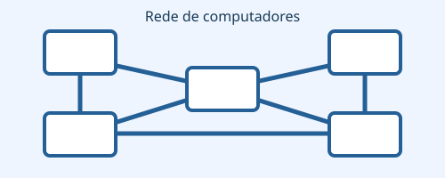
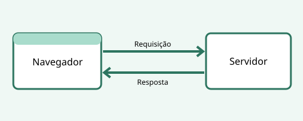

Linha do tempo
As primeiras redes de computadores foram criadas para permitir a comunicação entre máquinas. A ARPANET, iniciada em 1969, ajudou a testar ideias de redes de pacotes.

- Década de 1960: pesquisas em redes de computadores e comutação de pacotes.
- 1969: ARPANET conecta seus primeiros nós.
- 1983: adoção de TCP/IP na ARPANET, importante para a interconexão de redes.
- 1984: o DNS começa a organizar nomes de domínio.
- 1989: Tim Berners-Lee apresenta no CERN uma proposta para a World Wide Web.
- 1990: desenvolvimento inicial de HTML, HTTP, servidor Web e navegador/editor.
- 1991: a Web torna-se disponível a uma comunidade maior.
- Anos 2000 em diante: aplicações Web modernas, interativas e conectadas a serviços.
Da Web 1.0 às aplicações modernas
Web 1.0
Predominavam páginas de consulta, com pouca interação do visitante.
Web moderna
Aplicações permitem colaboração, formulários, atualização dinâmica e comunicação com APIs. O navegador solicita recursos a um servidor Web, que devolve uma resposta.

Exemplo de endereço: https://example.org. Em códigos HTML, sub e sup também formatam textos, como H2O e 103.
Referência histórica: Tim Berners-Lee desenvolveu a proposta da Web no CERN em 1989.
Glossário — lista de definições
- TCP/IP
- Conjunto de protocolos usado para a comunicação entre redes.
- DNS
- Sistema que associa nomes de domínio a dados como endereços IP.
- HTML
- Linguagem de marcação usada para estruturar páginas Web.
- HTTP
- Protocolo de requisição e resposta usado na Web.
- Navegador
- Programa que solicita e apresenta recursos Web.
- Servidor Web
- Programa que recebe requisições e fornece os recursos solicitados.
Principais marcos
| Ano | Acontecimento | Importância |
|---|---|---|
| 1969 | ARPANET | Experimentos de interligação de computadores |
| 1983 | TCP/IP | Padronização da comunicação entre redes |
| 1984 | DNS | Uso de nomes de domínio |
| 1989 | Proposta da Web | Ideia de documentos interligados |
| 1990 | HTML, HTTP, navegador e servidor | Fundamentos da World Wide Web |
| 1991 | Expansão do acesso à Web | Compartilhamento de informação |
| 2000+ | Aplicações Web | Interatividade e serviços online |
| Linha do tempo resumida para fins didáticos. | ||